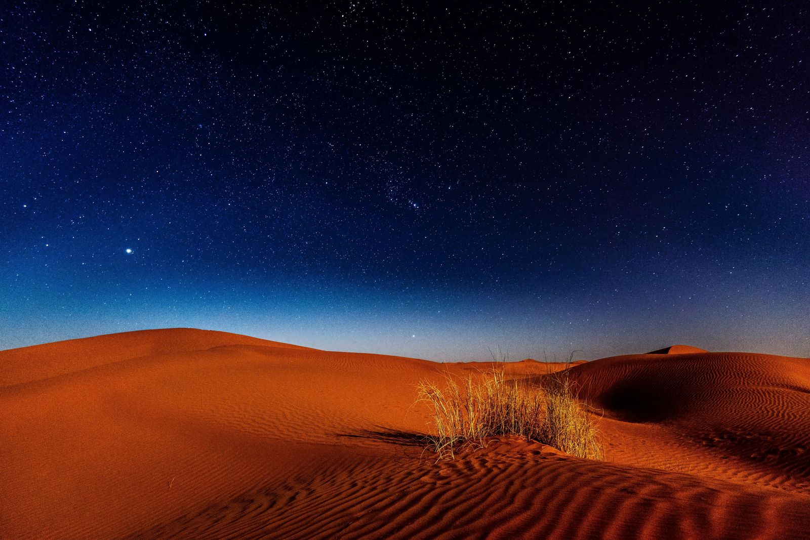
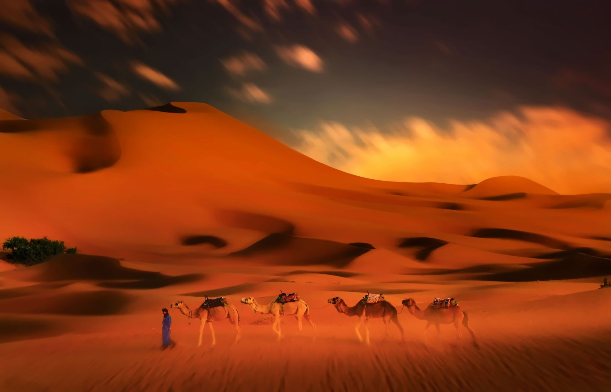

A private desert tour timed so that 31 December is your night in the dunes
Forget crowded countdowns: this year, ring in the New Year by a campfire in the Erg Chebbi dunes, far from any city lights.
Every December, more and more of our guests ask us the same question: can we spend New Year's Eve in the desert? The answer is yes, and honestly, it is one of our favourite nights of the year. No fireworks over a crowded square, no queue for a restaurant: just the dunes of Erg Chebbi, a fire, mint tea, Berber drums and more stars than you have ever seen. Here is how our New Year in the Sahara works, which dates to choose and what to pack.
The desert in winter is at its most beautiful. Days are sunny and pleasant, the air is crystal clear and, with no light pollution at all, the night sky over Merzouga is spectacular. Counting down to midnight sitting on the sand, wrapped in a blanket next to the fire, is something our guests tell us they never forget. It is also a calm, intimate way to start the year: the camp is small, the music is live and the people around you are your travel companions, not a crowd.

We plan two of our private tours from Marrakech so that the night of 31 December is spent in our desert camp in the Erg Chebbi dunes. Both tours are fully private, with your own vehicle and driver-guide, and you choose between a standard camp and a luxury private camp with en-suite tents.
On both tours, departing on 29 December means you arrive in the dunes on 30 December and spend 30 and 31 December in camp. Departing on 30 December means you arrive on New Year's Eve itself and wake up in the desert on 1 January. Both options work: tell us which you prefer and we will build the trip around your dates.
The day starts with the drive into the desert and ends the best way possible: a camel trek into the dunes at sunset, with the sand turning orange then red around you. Once in camp, dinner is served, followed by Berber drums and music around the fire. When midnight comes, you are sitting under the Milky Way, far from any town. On 1 January, wake up early for the sunrise over the dunes: it is the most beautiful way to see the first light of the year.

Pro Tip: Places in the desert camps around 31 December are limited and fill up every year. Contact us as early as possible with your dates and the number of travellers, and we will confirm availability within the day.
Days in the Sahara at the end of December are usually sunny and mild, but nights are cold and can drop close to freezing. The camps provide thick blankets, yet a few warm layers make the evening by the fire much more enjoyable.
Yes. Like all our tours, it is fully private: your own vehicle, your own driver-guide and an itinerary built around your group. Only the camp evening is shared with the other guests staying in the same camp, unless you choose our luxury private camp.
Yes. We regularly organise departures from Fes, Casablanca and Agadir as well. Send us your arrival city and dates and we will adapt the itinerary so that you are still in the dunes on 31 December.
The price depends on the tour you choose, the number of travellers and the camp level (standard or luxury). Send us your request and we will reply with a personalised quote.
Days are pleasant and sunny; it is only the nights that are cold. With warm clothes, the blankets provided in camp and the fire, guests are comfortable. The luxury camp tents are better insulated if you are sensitive to the cold.
If you have always dreamed of starting a new year somewhere truly different, this is it. Send us your dates on WhatsApp or through the booking form on the 5-day or 7-day tour page, and we will take care of everything else.